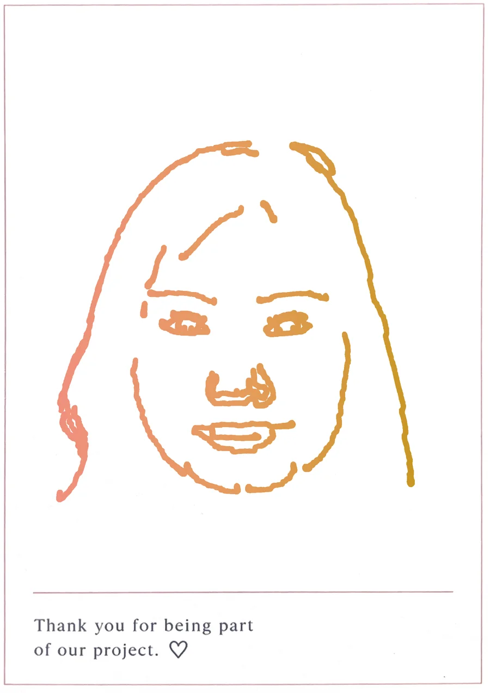

<title>Real-Time Robotic Portrait Drawing System</title>
<link rel="canonical" href="https://jiayueliu1208.github.io/capstone-EM-12-FFAR-020/">
<meta name="description" content="Capstone project page for a real-time robotic portrait drawing system.">
<link rel="preconnect" href="https://fonts.googleapis.com">
<link rel="preconnect" href="https://fonts.gstatic.com" crossorigin>
<link rel="stylesheet" href="https://fonts.googleapis.com/css2?family=Inter:wght@400;500;600;700&display=swap">
<style>
  /* Layout: a product page. A centred white hero with the title, a black full-screen scene where the
     pink arm draws as you scroll, the film on black, real postcards, the pipeline steps on light grey, then the vote. Colour
     comes only from the arm's pink and the ink's gold, joined in one gradient for the headline. */
  :root {
    --white: #ffffff;
    --gray: #f5f5f7;
    --ink: #1d1d1f;
    --muted: #6e6e73;
    --accent: #b14f2c; /* links and focus rings: the deep end of the pink-to-gold palette, readable as small text */
    --black: #000000;
    --on-black: #f5f5f7;
    --muted-dark: #86868b;
    --vote: linear-gradient(90deg, #e46f59 0%, #d9803a 52%, #b38411 100%);
    --grad: linear-gradient(90deg, #f0907d 0%, #e59c5c 52%, #c99724 100%);
    --f: -apple-system, BlinkMacSystemFont, 'SF Pro Display', 'SF Pro Text', 'Inter', 'Helvetica Neue', Arial, sans-serif;
    color-scheme: light;
  }

  * { box-sizing: border-box; }
  [hidden] { display: none !important; }
  html { background: var(--white); }
  body {
    margin: 0;
    background: var(--white);
    color: var(--ink);
    font: 400 17px/1.47 var(--f);
    letter-spacing: -0.022em;
    -webkit-font-smoothing: antialiased;
  }
  a { color: var(--accent); text-decoration: none; }
  a:hover { text-decoration: underline; }
  :focus-visible { outline: 2px solid var(--accent); outline-offset: 3px; border-radius: 6px; }
  .sr-only { position: absolute; width: 1px; height: 1px; overflow: hidden; clip: rect(0 0 0 0); white-space: nowrap; }
  .gutter {
    padding-left: max(22px, env(safe-area-inset-left, 0px));
    padding-right: max(22px, env(safe-area-inset-right, 0px));
  }
  .wrap { max-width: 980px; margin: 0 auto; }
  .grad { background: var(--grad); -webkit-background-clip: text; background-clip: text; color: transparent; }

  /* local nav, frosted */
  body::before { content: ''; position: fixed; inset: 0 0 auto; height: env(safe-area-inset-top, 0px); z-index: 10; background: rgba(251, 251, 253, 0.85); }
  .localnav {
    position: sticky;
    top: env(safe-area-inset-top, 0px);
    z-index: 9;
    background: rgba(251, 251, 253, 0.8);
    -webkit-backdrop-filter: saturate(180%) blur(20px);
    backdrop-filter: saturate(180%) blur(20px);
    border-bottom: 1px solid rgba(0, 0, 0, 0.08);
    transition: background-color 0.3s, border-color 0.3s;
  }
  .localnav.dark { background: rgba(22, 22, 23, 0.8); border-bottom-color: rgba(255, 255, 255, 0.12); }
  .localnav.dark .name, .localnav.dark nav a:not(.pill) { color: var(--on-black); }
  .localnav .wrap { display: flex; align-items: center; justify-content: space-between; gap: 16px; height: 52px; }
  .localnav .name { font-size: 19px; font-weight: 600; letter-spacing: -0.01em; color: var(--ink); white-space: nowrap; overflow: hidden; text-overflow: ellipsis; }
  .localnav nav { display: flex; align-items: center; gap: 22px; font-size: 12px; letter-spacing: -0.01em; }
  .localnav nav a { color: var(--ink); opacity: 0.85; }
  .localnav nav a:hover { opacity: 1; text-decoration: none; }
  .pill {
    display: inline-flex;
    align-items: center;
    justify-content: center;
    padding: 11px 22px;
    border-radius: 980px;
    background: var(--vote);
    color: #fff;
    font: 400 17px/1 var(--f);
    letter-spacing: -0.02em;
    white-space: nowrap;
  }
  .pill:hover { text-decoration: none; }
  .pill.small { padding: 5px 12px; font-size: 12px; opacity: 1 !important; color: #fff !important; }
  .pill[aria-disabled="true"] { cursor: not-allowed; }
  /* the vote buttons: bigger, in the headline gradient (a shade deeper so white text reads), with a
     warm glow and a sheen that sweeps across every few seconds */
  .pill.vote-cta {
    position: relative; overflow: hidden; isolation: isolate; gap: 9px;
    padding: 17px 36px; font-size: 21px; font-weight: 600;
    background: var(--vote); box-shadow: 0 10px 28px rgba(217, 128, 58, 0.42);
    transition: transform 0.2s ease, box-shadow 0.2s ease;
  }
  .pill.vote-cta:hover { background: var(--vote); transform: translateY(-1px) scale(1.03); box-shadow: 0 14px 34px rgba(217, 128, 58, 0.5); }
  .pill.vote-cta::after {
    content: ''; position: absolute; inset: 0; z-index: -1;
    background: linear-gradient(105deg, transparent 35%, rgba(255, 255, 255, 0.42) 50%, transparent 65%);
    transform: translateX(-120%); animation: sheen 4.5s ease-in-out 1.5s infinite;
  }
  @keyframes sheen { 0%, 60% { transform: translateX(-120%); } 90%, 100% { transform: translateX(120%); } }
  .vote-cta .heart { width: 1em; height: 1em; flex: none; }
  .pill.small.vote-cta { padding: 8px 18px; font-size: 15px; gap: 6px; box-shadow: 0 4px 14px rgba(217, 128, 58, 0.45); }
  .more { font-size: 19px; }
  .more::after { content: ' ›'; }

  /* hero */
  .hero { text-align: center; padding-block: clamp(70px, 11vw, 130px) clamp(60px, 9vw, 110px); }
  .hero .eyebrow { margin: 0 0 14px; font-size: clamp(17px, 1.8vw, 21px); font-weight: 600; color: var(--muted); letter-spacing: -0.01em; }
  .hero h1 {
    margin: 0 auto;
    max-width: 15ch;
    font-size: clamp(44px, 7.6vw, 96px);
    line-height: 1.04;
    font-weight: 700;
    letter-spacing: -0.035em;
    text-wrap: balance;
  }
  .hero .tagline { margin: 22px 0 0; font-size: clamp(28px, 4vw, 48px); line-height: 1.1; font-weight: 600; letter-spacing: -0.025em; }
  .hero .sub { margin: 18px auto 0; max-width: 34ch; font-size: clamp(19px, 1.9vw, 24px); line-height: 1.35; color: var(--muted); letter-spacing: -0.015em; }
  .ctas { display: flex; flex-wrap: wrap; justify-content: center; align-items: center; gap: 18px 34px; margin-top: 34px; }
  .byline { margin: 38px 0 0; font-size: 14px; color: var(--muted); }
  .hint { display: block; margin-top: 46px; font-size: 13px; color: var(--muted); }
  .hint::after { content: ''; display: block; width: 9px; height: 9px; margin: 10px auto 0; border-right: 1.5px solid currentColor; border-bottom: 1.5px solid currentColor; transform: rotate(45deg); }

  /* the drawing scene: plays by itself once it is on screen */
  .scrolly { position: relative; background: var(--black); color: var(--on-black); }
  .scene { position: relative; height: 100vh; height: 100svh; min-height: 600px; max-height: 1000px; overflow: hidden; }
  .replay {
    position: absolute;
    right: max(22px, env(safe-area-inset-right, 0px));
    bottom: 22px;
    z-index: 3;
    display: inline-flex;
    align-items: center;
    gap: 8px;
    padding: 9px 16px 9px 14px;
    border: 0;
    border-radius: 980px;
    background: rgba(255, 255, 255, 0.14);
    color: var(--on-black);
    font: 400 14px var(--f);
    letter-spacing: -0.01em;
    cursor: pointer;
    -webkit-backdrop-filter: blur(12px);
    backdrop-filter: blur(12px);
  }
  .replay:hover { background: rgba(255, 255, 255, 0.22); }
  .replay svg { width: 14px; height: 14px; }
  .scene .stage { position: absolute; inset: 0; }
  .scene canvas { position: absolute; inset: 0; width: 100%; height: 100%; }
  .caps { position: absolute; left: 0; right: 0; top: 0; z-index: 2; height: 30%; pointer-events: none; text-align: center; }
  .cap {
    position: absolute;
    inset: 0;
    display: flex;
    flex-direction: column;
    justify-content: center;
    justify-content: safe center;
    align-items: center;
    padding: 56px 22px 0;
    opacity: 0;
    transform: translateY(14px);
    transition: opacity 0.2s ease, transform 0.2s ease;
  }
  .cap.on { opacity: 1; transform: none; transition: opacity 0.5s ease 0.18s, transform 0.5s ease 0.18s; }
  .cap h2 { margin: 0; font-size: clamp(32px, 5vw, 64px); line-height: 1.06; font-weight: 700; letter-spacing: -0.03em; text-wrap: balance; }
  .cap p { margin: 10px auto 0; max-width: 36ch; font-size: clamp(17px, 1.7vw, 21px); line-height: 1.38; color: var(--muted-dark); }

  /* film */
  .film { background: var(--black); color: var(--on-black); text-align: center; padding-block: 40px 130px; }
  .film h2, .gallery h2, .pipeline h2, .vote h2 { margin: 0; font-size: clamp(40px, 6vw, 80px); line-height: 1.05; font-weight: 700; letter-spacing: -0.035em; text-wrap: balance; }
  .film p.sub { margin: 14px auto 0; max-width: 40ch; font-size: clamp(19px, 1.9vw, 24px); line-height: 1.35; color: var(--muted-dark); }
  .film video { display: block; width: 100%; max-width: 100%; aspect-ratio: 16 / 9; margin: 48px auto 0; border-radius: 28px; background: #111; }

  /* gallery: scans of real take-home postcards, a row on desktop, a swipeable strip on phones */
  .gallery { text-align: center; padding-block: 120px; }
  .gallery p.sub { margin: 16px auto 0; max-width: 40ch; font-size: clamp(19px, 1.9vw, 24px); line-height: 1.35; color: var(--muted); }
  .cards { display: grid; grid-template-columns: repeat(3, minmax(0, 1fr)); gap: clamp(16px, 2.6vw, 32px); max-width: 1080px; margin: 56px auto 0; padding: 0; list-style: none; }
  .card { min-width: 0; }
  .card img { display: block; width: 100%; height: auto; border-radius: 6px; background: var(--white); box-shadow: 0 1px 2px rgba(0, 0, 0, 0.06), 0 14px 36px rgba(0, 0, 0, 0.1); }

  /* pipeline: the seven steps as a simple numbered list, read top to bottom */
  .pipeline { background: var(--gray); padding-block: 120px; }
  .pipe-head { text-align: center; }
  .eyebrow { margin: 0 0 18px; font-size: 14px; font-weight: 600; letter-spacing: 0.12em; text-transform: uppercase; color: var(--muted); }
  .pipeline p.sub { margin: 18px auto 0; max-width: 46ch; font-size: clamp(19px, 1.9vw, 24px); line-height: 1.4; color: var(--muted); text-wrap: pretty; }
  .steps { max-width: 820px; margin: 72px auto 0; padding: 0; list-style: none; }
  .step { display: grid; grid-template-columns: 76px minmax(0, 1fr); column-gap: 20px; padding: 30px 0; border-top: 1px solid #d2d2d7; }
  .step:last-child { border-bottom: 1px solid #d2d2d7; }
  .step .n { grid-row: span 2; width: max-content; font-size: clamp(28px, 3vw, 36px); line-height: 1.1; font-weight: 700; letter-spacing: -0.02em; background: var(--grad); -webkit-background-clip: text; background-clip: text; color: transparent; }
  .step h3 { margin: 0; font-size: clamp(24px, 2.6vw, 32px); line-height: 1.15; font-weight: 700; letter-spacing: -0.025em; }
  .step .t { margin: 8px 0 0; font-size: clamp(17px, 1.7vw, 19px); line-height: 1.45; color: var(--muted); }

  /* vote */
  .vote { text-align: center; padding-block: 130px 120px; }
  .vote p.sub { margin: 16px auto 0; max-width: 36ch; font-size: clamp(19px, 1.9vw, 24px); line-height: 1.35; color: var(--muted); }
  .qr { display: inline-flex; align-items: center; gap: 22px; margin-top: 52px; padding: 22px 28px 22px 22px; border-radius: 28px; background: var(--gray); text-align: left; max-width: 100%; }
  .qr-box { flex: none; display: grid; place-items: center; width: 204px; height: 204px; padding: 12px; border-radius: 16px; background: var(--white); }
  .qr-box a { display: block; width: 100%; height: 100%; }
  .qr-box img { display: block; width: 100%; height: 100%; object-fit: contain; }
  .qr-box.empty { border: 1px dashed #c7c7cc; font-size: 11px; line-height: 1.35; color: var(--muted); text-align: center; }
  .qr p { margin: 0; }
  .qr .t { font-size: 19px; font-weight: 600; }
  .qr .url { margin-top: 6px; font-size: 13px; color: var(--muted); overflow-wrap: anywhere; max-width: 260px; }

  footer { background: var(--gray); padding-block: 22px 34px; font-size: 12px; line-height: 1.5; color: var(--muted); }
  footer .wrap { display: flex; flex-wrap: wrap; justify-content: space-between; gap: 8px 24px; padding-top: 16px; border-top: 1px solid #d2d2d7; }

  @media (max-width: 640px) {
    .localnav nav a:not(.pill) { display: none; }
    /* the diagram's labels are too small to read at phone width, so it keeps a readable size and scrolls */
    .step { grid-template-columns: 48px minmax(0, 1fr); column-gap: 12px; padding: 24px 0; }
    .cards {
      grid-template-columns: none; grid-auto-flow: column; grid-auto-columns: 74%;
      overflow-x: auto; scroll-snap-type: x mandatory; scrollbar-width: none;
      margin-left: calc(-1 * max(22px, env(safe-area-inset-left, 0px)));
      margin-right: calc(-1 * max(22px, env(safe-area-inset-right, 0px)));
      padding: 8px max(22px, env(safe-area-inset-right, 0px)) 36px max(22px, env(safe-area-inset-left, 0px));
      scroll-padding-inline: 22px;
    }
    .card { scroll-snap-align: start; }
    .qr { flex-direction: column; align-items: flex-start; }
    .caps { height: 34%; }
  }
  /* reduced motion: no animation; the finished drawing sits under the captions */
  @media (prefers-reduced-motion: reduce) {
    .pill.vote-cta::after { animation: none; display: none; }
    .pill.vote-cta { transition: none; }
    .scene { height: auto; min-height: 0; max-height: none; overflow: visible; }
    .caps { position: relative; height: auto; padding-block: 90px 10px; }
    .cap { position: relative; opacity: 1; transform: none; padding: 0 22px 28px; }
    .scene .stage { position: relative; height: 72vh; }
    .cap { transition: none; }
  }
</style>

<header class="localnav gutter" id="localnav">
  <div class="wrap">
    <span class="name">Portrait Drawing Robot</span>
    <nav aria-label="Sections">
      <a href="#draw">Overview</a>
      <a href="#film">Film</a>
      <a href="#drawings">Drawings</a>
      <a href="#how">How it works</a>
      <a class="pill small vote-cta" href="#vote"><svg class="heart" viewBox="0 0 24 24" aria-hidden="true"><path d="M12 20.6s-7.4-4.5-9.5-9.1C1 8 3.1 4.4 6.6 4.4c2.1 0 3.6 1.1 4.4 2.6.8-1.5 2.3-2.6 4.4-2.6 3.5 0 5.6 3.6 4.1 7.1-2.1 4.6-9.5 9.1-9.5 9.1z" fill="currentColor"/></svg>Vote</a>
    </nav>
  </div>
</header>

<main>
  <section class="hero gutter">
    <p class="eyebrow">Capstone Project</p>
    <h1 id="siteTitle">Real-Time Robotic Portrait Drawing System</h1>
    <p class="tagline"><span class="grad">Your face. Drawn live.</span></p>
    <p class="sub">Sit for a photo. Watch technology turn your expression into a one-of-a-kind line portrait.</p>
    <div class="ctas">
      <a class="pill vote-cta" href="https://docs.google.com/forms/d/e/1FAIpQLSfJP5hbfy1YjXckvsFWt17oT6-uCBH3EMtHeV0Z3vzRL0Qb9A/viewform?usp=pp_url&amp;entry.932837813=B99:+Real-Time+Robotic+Portrait+Drawing+System" target="_blank" rel="noopener noreferrer"><svg class="heart" viewBox="0 0 24 24" aria-hidden="true"><path d="M12 20.6s-7.4-4.5-9.5-9.1C1 8 3.1 4.4 6.6 4.4c2.1 0 3.6 1.1 4.4 2.6.8-1.5 2.3-2.6 4.4-2.6 3.5 0 5.6 3.6 4.1 7.1-2.1 4.6-9.5 9.1-9.5 9.1z" fill="currentColor"/></svg>Vote for us</a>
      <a class="more" href="#film">Watch the film</a>
    </div>
    <p class="byline">By Jacqueline Mei, Luna Liu, Yi Ji · Supervised by Farhad Farokhi</p>
    <span class="hint">Scroll to watch it draw</span>
  </section>

  <section class="scrolly" id="draw" aria-label="The arm drawing a line portrait">
    <div class="scene">
      <div class="caps">
        <div class="cap on"><h2>Meet the artist.</h2><p>A 3-DOF robotic arm, printed in pink.</p></div>
        <div class="cap"><h2>One line at a time.</h2><p>A real pen follows the plotted path.</p></div>
        <div class="cap"><h2>Every stroke, planned.</h2><p>The drawing becomes a path before the pen ever touches the paper.</p></div>
        <div class="cap"><h2><span class="grad">Say cheese.</span></h2><p>The same path our robot drew on paper. A photo in, a one-of-a-kind drawing out.</p></div>
      </div>
      <div class="stage" id="stage"></div>
      <button class="replay" type="button" id="replayDraw" hidden>
        <svg viewBox="0 0 16 16" aria-hidden="true"><path d="M13.5 8a5.5 5.5 0 1 1-1.6-3.9M13.5 2.5v3h-3" fill="none" stroke="currentColor" stroke-width="1.6" stroke-linecap="round" stroke-linejoin="round"/></svg>
        Replay
      </button>
    </div>
  </section>

  <section class="film gutter" id="film">
    <div class="wrap">
      <h2>Watch the film.</h2>
      <p class="sub">One minute, from the ring light to the take-home postcard.</p>
      <video controls playsinline preload="metadata" poster="media/film-poster.jpg">
        <source src="media/capstone-film.mp4" type="video/mp4">
        Your browser cannot play this video.
      </video>
    </div>
  </section>

  <section class="gallery gutter" id="drawings">
    <h2>Drawn live. <span class="grad">Taken home.</span></h2>
    <p class="sub">Real postcards from our demo, drawn by the arm. The first is the one you watched above.</p>
    <ul class="cards">
      <li class="card"></li>
      <li class="card"></li>
      <li class="card"></li>
    </ul>
  </section>

  <section class="pipeline gutter" id="how">
    <div class="pipe-head">
      <p class="eyebrow">System Pipeline</p>
      <h2>From photo to <span class="grad">physical&nbsp;artwork.</span></h2>
      <p class="sub">Imagine taking a photo and watching a robot turn it into a drawing right in front of you. Our system transforms digital images into sketch paths, then guides a robotic arm to recreate the portrait on paper as a unique physical artwork.</p>
    </div>
    <ol class="steps" aria-label="Seven steps from photo to drawing">
      <li class="step"><span class="n">01</span><h3>Photo capture</h3><p class="t">Step up to the camera. A ring light and camera take a clear portrait in real time.</p></li>
      <li class="step"><span class="n">02</span><h3>Image processing</h3><p class="t">The photo is cleaned up and adjusted so your features stand out.</p></li>
      <li class="step"><span class="n">03</span><h3>Sketch conversion</h3><p class="t">Your face becomes a clean line sketch, keeping only the lines that matter.</p></li>
      <li class="step"><span class="n">04</span><h3>Drawing path</h3><p class="t">The sketch becomes ordered pen strokes: every point to visit, pen down or pen up.</p></li>
      <li class="step"><span class="n">05</span><h3>Robot planning</h3><p class="t">Each point becomes motion for the arm, timed to ease in and out of every stroke.</p></li>
      <li class="step"><span class="n">06</span><h3>Control</h3><p class="t">The controller sends the plan to the motors, one move at a time.</p></li>
      <li class="step"><span class="n">07</span><h3>Robot drawing</h3><p class="t">A real pen draws your portrait on a postcard you take home.</p></li>
    </ol>
  </section>

  <section class="vote gutter" id="vote">
    <h2>Your portrait. <span class="grad">Your vote.</span></h2>
    <p class="sub">Support our project: tap the button or scan the QR code to vote.</p>
    <div class="ctas"><a class="pill vote-cta" id="voteLink" href="https://docs.google.com/forms/d/e/1FAIpQLSfJP5hbfy1YjXckvsFWt17oT6-uCBH3EMtHeV0Z3vzRL0Qb9A/viewform?usp=pp_url&amp;entry.932837813=B99:+Real-Time+Robotic+Portrait+Drawing+System" target="_blank" rel="noopener noreferrer"><svg class="heart" viewBox="0 0 24 24" aria-hidden="true"><path d="M12 20.6s-7.4-4.5-9.5-9.1C1 8 3.1 4.4 6.6 4.4c2.1 0 3.6 1.1 4.4 2.6.8-1.5 2.3-2.6 4.4-2.6 3.5 0 5.6 3.6 4.1 7.1-2.1 4.6-9.5 9.1-9.5 9.1z" fill="currentColor"/></svg>Vote for us</a></div>
    <div class="qr">
      <div class="qr-box" id="qr"><a href="https://docs.google.com/forms/d/e/1FAIpQLSfJP5hbfy1YjXckvsFWt17oT6-uCBH3EMtHeV0Z3vzRL0Qb9A/viewform?usp=pp_url&amp;entry.932837813=B99:+Real-Time+Robotic+Portrait+Drawing+System" target="_blank" rel="noopener noreferrer" aria-label="Open the voting form for our project"></a></div>
      <div>
        <p class="t">Scan to vote for us</p>
        <p class="url">B99: Real-Time Robotic Portrait Drawing System</p>
      </div>
    </div>
  </section>
</main>

<footer class="gutter">
  <div class="wrap">
    <span>Real-Time Robotic Portrait Drawing System. A capstone project by Jacqueline Mei, Luna Liu and Yi Ji, supervised by Farhad Farokhi.</span>
    <a href="https://github.com/JiayueLiu1208/capstone-EM-12-FFAR-020">Source on GitHub</a>
  </div>
</footer>

<script src="https://cdnjs.cloudflare.com/ajax/libs/three.js/r128/three.min.js"></script>
<script src="plotter.js"></script>
<script src="arm3d.js"></script>
<script>
  /* Voting form decoded from the supplied voting QR image. */
  const VOTE_URL = 'https://docs.google.com/forms/d/e/1FAIpQLSfJP5hbfy1YjXckvsFWt17oT6-uCBH3EMtHeV0Z3vzRL0Qb9A/viewform?usp=pp_url&entry.932837813=B99:+Real-Time+Robotic+Portrait+Drawing+System';

  /* What the arm draws: a visitor's line portrait, the robot's own path from src/drawings/camera_path.csv
     (the second postcard in the gallery), one string of x,y pixel points per pen-down segment, in the
     robot's order. For another drawing: node tools/csv2drawing.mjs <file.csv>, and paste the output here. */
  const DRAWING = [
    '226,263 223,267 222,274 213,296 205,329',
    '204,331 197,363 197,374 191,391 191,405 183,433',
    '176,446 158,477 136,568',
    '140,559 148,573 152,605 160,621 166,628 171,641',
    '182,636 181,630 174,619 168,597 160,586',
    '138,601 141,617 147,626 163,644 172,649 178,679',
    '182,648 185,658 185,681 178,703 160,740 151,749 147,758 136,767',
    '384,720 351,685 339,670 331,654 313,628 300,594 296,573 287,546 286,519 281,500 284,486',
    '401,420 403,420 405,420 406,418 408,416 410,415 412,415 412,413 414,411 414,409 415,407 415,405 415,404 415,402 415,400 415,398',
    '425,398 423,394 419,393 412,387 399,382 394,382 390,380 377,380 372,382 366,382 362,384 359,387',
    '375,391 373,393 373,394 372,396 372,398 372,400 372,402 372,404 372,405 372,407 373,409 373,411 375,413 375,415 377,415 379,416 381,418 383,420 384,420 386,420',
    '339,405 341,405 344,404 346,404 350,402 352,402 353,400 355,398 357,396 359,396 361,394 362,393 366,391 368,391 372,391 377,389 381,389 384,389 390,389 394,391 399,391 403,393 406,394 412,396 415,398 419,402 423,404 425,407 428,409 430,411 432,413 432,416 434,416 434,418 432,418 432,420 430,420 428,420 426,420 423,418 421,418 417,418 414,418 410,420 406,420 403,420 399,420 394,420 390,420 386,420 383,420 377,418 373,418 372,418 368,418 366,416 364,416 362,416 361,415 357,413 355,411 353,411 350,409 344,407 342,407 341,405 339,405',
    '300,389 298,382 300,367',
    '313,341 324,338 352,335 384,336 403,340 445,356',
    '542,356 576,343 596,340 615,339 651,340 680,347',
    '636,393 633,389 631,389 624,384 616,384 613,382 600,382 596,384 587,385 574,391 571,394 567,396 565,400',
    '578,396 576,398 576,400 576,402 576,404 576,405 576,407 576,409 578,411 578,413 580,413 580,415 580,416 582,416 584,418 585,420',
    '613,418 615,416 616,416 616,415 616,413 618,413 618,411 620,409 620,407 620,405 620,404 620,402 620,400 620,398 618,396 618,394 616,394 616,393 616,391 615,391 613,389',
    '554,418 556,416 558,413 560,411 562,409 565,407 567,404 571,402 574,398 578,396 584,394 587,393 591,391 596,391 600,389 605,389 609,389 613,389 616,391 620,391 624,391 626,393 629,394 631,396 633,396 635,398 636,400 638,402 640,402 642,404 646,404 647,405 649,405 647,407 644,407 642,409 638,411 636,411 635,413 631,415 629,416 627,416 626,416 622,418 620,418 616,418 613,418 609,420 605,420 602,420 596,420 593,420 587,420 584,420 580,420 576,420 573,420 569,420 567,420 563,420 562,420 560,420 558,420 556,418 554,418',
    '540,502 551,511 553,515 560,521 562,528 565,530 567,539 566,559 563,563 560,564 549,575 536,576 534,575',
    '536,559 516,566 509,572 490,573 490,572 481,570 472,573 463,570 454,573 445,570 434,559 431,549 430,541 434,521 437,515 443,513',
    '450,521 448,526 445,528 441,541 445,553 454,557 459,550 470,548 483,552 483,553 494,553',
    '505,555 505,551 504,550 519,544 521,537 518,531',
    '521,548 536,550 543,557 549,559 554,552 554,543 555,542 553,540 551,533 545,529 540,530 528,521 526,508 527,506',
    '534,645 518,644 516,645 485,645 478,643 472,644 465,641 441,639',
    '388,707 415,734 425,738 432,744 447,747 463,755 489,756',
    '516,754 536,754 551,751 565,743 573,742 596,727 605,711 609,709',
    '633,712 637,706 656,689 658,684 662,682 669,674 675,661 684,652 691,632 699,621 705,608 706,583 710,561 713,555 715,531 726,475 726,444 722,433',
    '602,619 585,614 574,617 563,617 549,612 534,612 532,610 520,610 501,616 481,610 461,610 441,615 436,619 425,619 417,616 405,619 402,623 403,630 414,629 419,630 426,641 434,643 432,648 439,649 454,663 479,665 490,671 501,665 525,665 529,667 532,658 545,657 551,649 556,647 565,639',
    '847,736 843,668 837,636 839,628 839,610 834,557 830,546 828,506 814,455 805,404 791,361 779,341 777,321 772,307 772,283 746,217 742,195 724,152 717,146 706,120 694,104 682,93 673,75 647,50 636,46',
    '638,53 657,71 662,73',
    '691,84 679,62 673,58 661,42 654,37 624,25 605,21 596,22 601,28 619,32 631,38',
    '523,44 527,45 505,36 487,35 474,38 457,38',
    '510,24 485,22 406,36 379,52 361,60 339,78 312,104 301,119 290,130 285,140 268,162 261,179 256,185 254,194 248,201 246,215 237,231 224,263',
    '308,325 318,305 318,298 326,279 330,261 342,241',
    '379,263 424,214 426,210 457,180 468,175 476,169 487,169 500,161',
    '547,148 552,148 569,177'
  ];

  (function () {
    const $ = (id) => document.getElementById(id);
    const reduce = !!(window.matchMedia && window.matchMedia('(prefers-reduced-motion: reduce)').matches);
    const layout = Plotter.drawingLayout(DRAWING, 'portrait', { size: 100 });
    const caps = [...document.querySelectorAll('.cap')], replayBtn = $('replayDraw');
    let started = false, shownCap = 0;
    /* the paper starts below the tallest caption, whatever the screen height, font or text size */
    const capsBox = document.querySelector('.caps');
    function capsBottom() {
      let max = 0;
      for (const c of caps) for (const el of c.children) max = Math.max(max, capsBox.offsetTop + c.offsetTop + el.offsetTop + el.offsetHeight);
      return max;
    }
    const capsClear = (H, share) => Math.max(Math.round(H * share), Math.ceil(capsBottom()) + 36);
    /* captions follow the drawing's own clock, not the scroll position */
    function onFrame(st, api) {
      if (!api.plan) return;
      const f = Math.min(1, st.t / api.plan.total);
      const c = st.done ? 3 : f < 0.12 ? 0 : f < 0.5 ? 1 : f < 0.86 ? 2 : 3;
      if (c !== shownCap && !reduce) {
        caps[shownCap].classList.remove('on');
        caps[c].classList.add('on');
        shownCap = c;
      }
      replayBtn.hidden = !(started && st.done && !reduce);
    }
    const duration = () => 15;
    const T = window.THREE;
    const col = (hex) => new T.Color(hex).convertSRGBToLinear();
    const GOLD = '#c99724';

    /* 3D scene: the pink printed arm on a black stage, a white sheet in a soft key light. */
    function scene3D(stage) {
      if (!T || !window.Arm3D) return null;
      let paper = null;
      return Arm3D.create(stage, {
        layout,
        duration,
        autoplay: false,
        textLayout: { z: 172, maxW: 150, maxCap: 999, maxH: 150 },
        view: {
          baseAt: 'bottom',
          height: 1700,
          vAlign: 0.4,
          padPx: 14,
          get padTopPx() { return reduce ? 20 : capsClear(stage.clientHeight, stage.clientWidth < 640 ? 0.34 : 0.28); },
          padBottomPx: 6,
          farMarginMM: 34,
          maxTextPx: 620,
          homeX: (W) => (W < 520 ? 118 : 150)
        },
        materials: () => ({
          pink: new T.MeshStandardMaterial({ color: col('#ef9a89'), roughness: 0.62, metalness: 0 }),
          pinkLight: new T.MeshStandardMaterial({ color: col('#f4ad9e'), roughness: 0.55, metalness: 0 }),
          metal: new T.MeshStandardMaterial({ color: col('#d8d8d8'), roughness: 0.28, metalness: 0.55 }),
          tip: new T.MeshStandardMaterial({ color: col('#c9a04a'), roughness: 0.35, metalness: 0.5 })
        }),
        ink: { color: col(GOLD), width: 1.25 },
        frame: onFrame,
        environment(scene) {
          scene.add(new T.HemisphereLight(0xffffff, 0x1a1a1a, 0.5));
          // key light from the upper left of the frame (screen left is +x, screen up is +z here)
          const key = new T.DirectionalLight(0xffffff, 0.72);
          key.position.set(300, 900, 420);
          key.target.position.set(0, 0, 120);
          key.castShadow = true;
          key.shadow.mapSize.set(2048, 2048);
          key.shadow.bias = -0.0004;
          key.shadow.radius = 4;
          Object.assign(key.shadow.camera, { left: -460, right: 460, top: 460, bottom: -460, near: 100, far: 2000 });
          scene.add(key, key.target);
        },
        onLayout(box, scene) {
          if (paper) return;
          const w = box.hw * 2 + 70, near = Math.max(68, box.z0 - 26), far = box.z1 + 34;
          const g = new T.PlaneGeometry(w, far - near);
          g.rotateX(-Math.PI / 2);
          paper = new T.Mesh(g, new T.MeshStandardMaterial({ color: col('#f7f6f2'), roughness: 0.92 }));
          paper.position.set(0, 0.05, (near + far) / 2);
          paper.receiveShadow = true;
          scene.add(paper);
        }
      });
    }

    /* 2D fallback when WebGL is missing: the same arm and drawing, flat. */
    function scene2D(stage) {
      const PINK = '#f2a594', EDGE = '#dc8776', LIGHT = '#f8c2b5';
      const disc = (ctx, c, r, fill, edge) => { ctx.beginPath(); ctx.arc(c.x, c.y, r, 0, Math.PI * 2); ctx.fillStyle = fill; ctx.fill(); if (edge) { ctx.strokeStyle = edge; ctx.lineWidth = 1.2; ctx.stroke(); } };
      const link = (ctx, A, r1, B, r2) => { ctx.beginPath(); Plotter.capsule(ctx, A, r1, B, r2); ctx.fillStyle = PINK; ctx.fill(); ctx.strokeStyle = EDGE; ctx.lineWidth = 1.2; ctx.stroke(); };
      return Plotter.create(stage, {
        text: 'portrait',
        layout,
        duration,
        autoplay: false,
        geometry: (W, H, box) => Plotter.articulatedGeometry(W, H, box, {
          textY: 172, textMaxW: 150, textMaxCap: 999, textMaxH: 150, padTop: reduce ? Math.round(H * 0.3) : capsClear(H, 0.3), padBottom: 8,
          dims: { home: { x: 150, y: 20, z: 8 } }
        }),
        frame: onFrame,
        bg(ctx, g) {
          const x0 = g.ox - 35 * g.P, y0 = g.oy - 34 * g.P;
          ctx.fillStyle = '#f7f6f2';
          ctx.fillRect(x0, y0, g.tw + 70 * g.P, Math.min(g.base.y - 68 * g.P, g.oy + g.th + 26 * g.P) - y0);
        },
        ink(ctx, pts, info) {
          ctx.strokeStyle = GOLD;
          ctx.lineWidth = Math.max(2, info.geom.scale * 0.5);
          ctx.lineCap = ctx.lineJoin = 'round';
          ctx.beginPath();
          pts.forEach((q, i) => (i ? ctx.lineTo(q.x, q.y) : ctx.moveTo(q.x, q.y)));
          ctx.stroke();
        },
        arm(ctx, st, g) {
          const P = g.P;
          disc(ctx, st.base, 58 * P, PINK, EDGE);
          disc(ctx, st.base, 42 * P, LIGHT, EDGE);
          link(ctx, st.elbow, 15 * P, st.wrist, 12 * P);
          link(ctx, st.shoulder, 18 * P, st.elbow, 16 * P);
          disc(ctx, st.elbow, 8 * P, '#dadada', '#b9b9b9');
          disc(ctx, st.wrist, 10 * P, PINK, EDGE);
        }
      });
    }

    const stage = $('stage');
    const p = scene3D(stage) || scene2D(stage);
    // captions change height once the web font arrives; re-frame then
    if (document.fonts && document.fonts.ready) document.fonts.ready.then(() => p.refresh && p.refresh());
    window.plotter = p;

    /* start drawing once most of the scene is on screen; it then runs at its own pace */
    const section = $('draw'), nav = $('localnav');
    const begin = () => { started = true; p.play(); };
    if (reduce) {
      caps.forEach((c) => c.classList.add('on'));
    } else if ('IntersectionObserver' in window) {
      const io = new IntersectionObserver((es) => {
        if (es.some((e) => e.isIntersecting) && !started) { begin(); io.disconnect(); }
      }, { threshold: 0.55 });
      io.observe(section);
    } else {
      begin();
    }
    replayBtn.addEventListener('click', () => { replayBtn.hidden = true; begin(); });

    /* the bar turns dark over the black sections, as on apple.com */
    const darkSections = [section, $('film')];
    let pending = false;
    function navTone() {
      pending = false;
      const y = nav.getBoundingClientRect().bottom;
      nav.classList.toggle('dark', darkSections.some((s) => { const b = s.getBoundingClientRect(); return b.top <= y && b.bottom >= y; }));
    }
    window.addEventListener('scroll', () => { if (!pending) { pending = true; requestAnimationFrame(navTone); } }, { passive: true });
    window.addEventListener('resize', navTone);
    navTone();

    /* vote and QR */
    const vote = $('voteLink');
    if (VOTE_URL === '#') {
      vote.title = 'The voting link has not been set yet';
      vote.addEventListener('click', (e) => e.preventDefault());
    } else {
      vote.href = VOTE_URL;
      vote.removeAttribute('aria-disabled');
      vote.target = '_blank';
      vote.rel = 'noopener noreferrer';
    }

  })();
</script>
